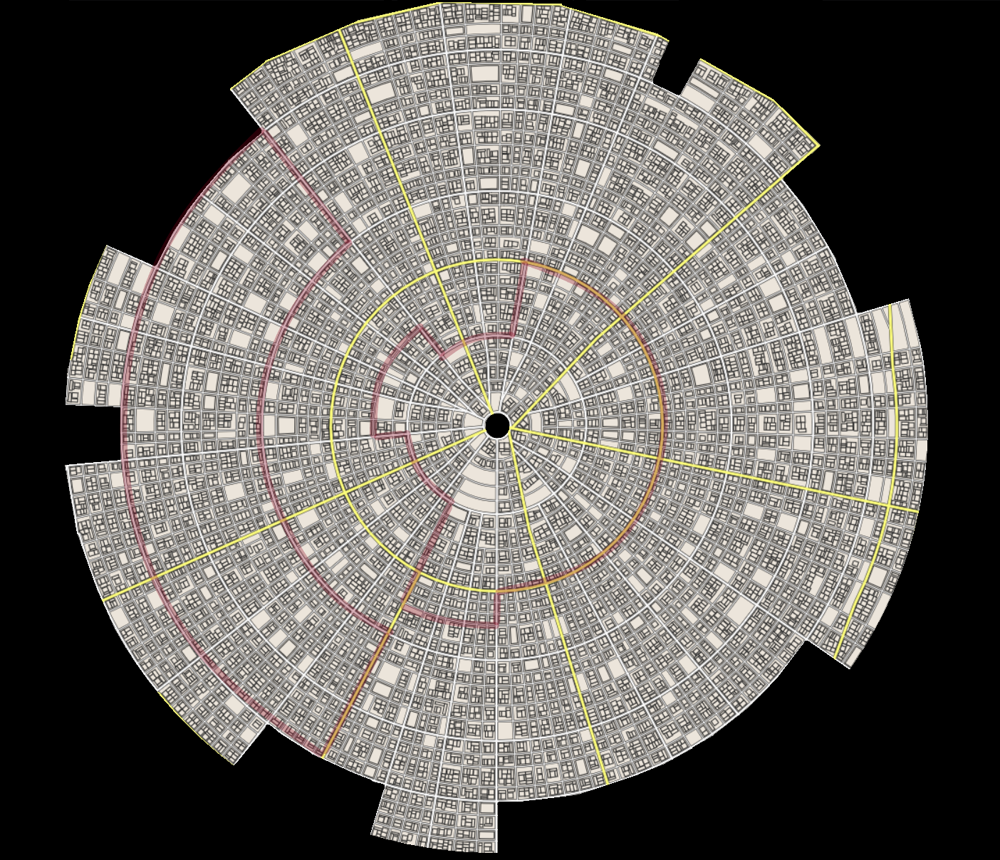

Void's Call
1. Project Description
This was a hobby project, where I set out to build a scifi tabletop rpg with some horror elements.
Team and Roles:
Toni Tiilikainen - design, writing, testing & programming
Design:
The purpose was to design a science fiction tabletop rpg with the following steps.
1. Design rules for spaceship combat with meaningful decision-making.
2. Design rules for ground combat with authentic battle mechanics using futuristic technology.
3. Design rules for AI warfare, which fits together with spaceship battles.
4. Design a pseudo-scientific, horror themed magic and rules on how to use it in combat, which further expands the array of available tools in steps 1.-3.
5. Create a digital character sheet, which does at least the more difficult calculations for the player (=most likely just an excel table).
6. Basic world design = a rough star map, major political factions, cultural design concepts, item tables with stats and prices, and possibly some light concept art to create the mood and get inspiration (most of this art will be "borrowed" from the internet or created with existing freely accessible AIs).
7. A rudimentary statistical analysis on the rule set to achieve desired length combat.
8. Preliminary testing in a gameplay environment over the complexity and balance of the rule set to achieve an equilibrium of "fun vs realism".
Achieved:
Steps 1 through 5 were designed and documented.
Step 6 is by its very nature never truly complete.
Step 7 has gone through preliminary testing of ranged combat, but other modules have yet to be programmed for statistical analysis. The program was written using c#.
Step 8 is pending appropriate in-game situations. However, the few preliminary results would suggest the system is on the complex side and should be toned down. This was the expected result from early on in the design process, but further data points are needed before appropriate action can be determined.
Future:
Step 3 (AI warfare) requires amending as they turned out excessively complex for the purpose. This is a secondary objective to be handled before I add the AI rules to the statistics program.
Item table, although it has expanded to 14 pages now, there are still some areas that should be expanded. The most pressing deficiency on the item list is limited amount of ship components.
There is an expectation the spaceship combat requires tuning down to make it more streamline. However, this requires other ships to be designed for more accurate analysis.
Schedule:
After the summer spurt that allowed steps 1-5 to be completed, the schedule has been sporatic with a month or even longer breaks as I have been busy with school and other projects. Whenever I have found time though, the project has seen incremental improvements especially on step 6.
2. Problems and Solutions
Scifi theme: As I've mentioned already, I recognized fairly early on there was a certain necessity to creating wider assets for the world. This I find an inherent reality for any heavily interconnected world, like most scifi worlds are.
As a solution, you can just "wing it" a lot of the time and still give a sense of a vast world. I've come to learn however, interconnectiveness is part planning and part improvisation. You set the stage with what you plan and then add pieces to connect to those as the need arises, because you can never plan perfectly and you do need to start executing at some point. And don't be afraid of leaving unanswered questions as long as you have the confidence to come up with an answer later on. This all is of cource a skill and it's a fun one to improve and learn your limits.
Artistic skills: As the theme is scifi, there is an expectation of digital art rather than traditional (though it still works in some instances). I have realized I am sorely lacking on that digital front of art.
My current solution has been to ask for advice from different artists at our Kouvola branch and look online for helpful ideas. I have outsourced some of the art as well. This includes doing the ship blueprints with a friend (Picture 2.) and using AIs to generate some additional art (like generating voice lines for an ingame AI... with an AI). At this point though, I consider my biggest limiting factor for improvement is a lack of suitable software on my pc.
C#: When I wrote the first parts of the testing program, I had very basic understanding of C# and though the program works... it's kind of a mess in some regards. The solution is likely just refactoring the code with my improved skill set to help make it more modular and easier to handle.
Statistics: I am not especially knowledgeable about statistics, so I had to go through a few iterations of what kind of stats would benefit me rather than just throw out medians and p-values for show.
3. Testing
I've talked a lot about the testing program I made. First thing, it doesn't give straight answers, you have to interpret the results it gives. Its point was never to give me exact numbers, but to give me a rough idea of the range of damage a weapon does with different skilled attackers and different attack rolls. (Some example statistics for a grenade.)
I also used external tools to determine a good choice of dice (Picture 4.) and further evaluated the open-ended distribution of the chosen dice with another function I wrote myself on the testing program (nothing special about it, it just spits out a few lines in the console about the dice I already had to code for balance testing).
4. Screenshots
Picture 1. Player character uniform.

Picture 2. Blueprint for the players' ship.

Picture 3. Ranged weapon example test statistics.

Picture 4. Dice value distribution accumulation.

Picture 5. Table of content for world design.

Picture 6. Ship's character sheet. (I'm omitting player character sheets for now, because I don't have a clean one on hand.)

Picture 7. A 3d underground city map I designed with the help of a graphics design student, Meri Näsi.

Picture 7. A cutout of one level I created with an online tool.

5. Demo Video
Quick scroll through most of the rules and charts.
6. Conclusions
The scifi theme is a new challenge for me. There are some parts I feel are still rather bare bones. The rules are a bit rough around the edges. Yet, I feel like I'm starting to get a hang of things step at a time.